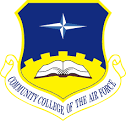

Aug 2011 - Present
Weber State University
BA - Computer Science
In progress -- Estimated Graduation Date 2019-11
Jan 2017 - Aug 2017
Ogden-Weber Technical College
Software Development Certification
1350 hours of specialized training
Emphasis in Agile Development and Game Design

Sep 1998 - Oct 2003
Community College of the Air Force
Associate of Applied Science - Explosive Ordnance Disposal Science
GPA 3.25